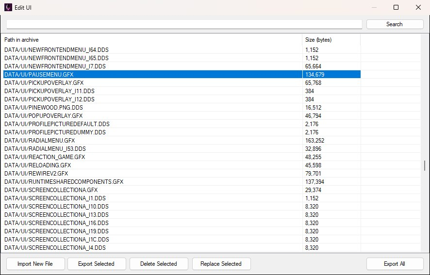
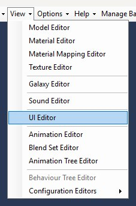
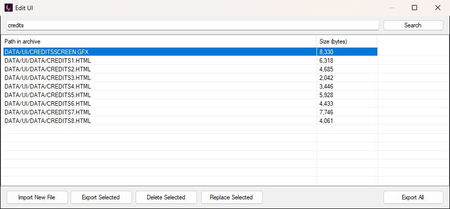
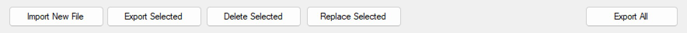
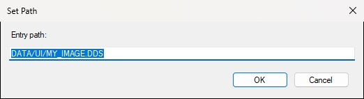

Open View → UI Editor to browse DATA/UI.PAK — the archive that holds the game's UI files. The Edit UI window, shown below, lists every entry with its path inside the archive and its size in bytes. OpenCAGE itself doesn't edit the contents; you export a file, change it with an external tool, then replace it. Writes go straight back into the PAK (no separate pack step).

The Edit UI window: search at the top, archive entries in the middle, the action buttons along the bottom.
There is no Save button: every replace, import or delete is written to the archive as soon as it happens, and the first time you open one of OpenCAGE's auto-saving editors a one-off Automatic saving reminder says so. Saving closes Alien: Isolation if it's running, so the game isn't locking the archive.
The UI Editor item sits in the main window's View menu with the other asset editors, as shown below. It doesn't need a level loaded.

UI.PAK is mostly a mix of:
You can export or replace any entry in the archive, not only those types.
Useful third-party tools for files you export:
The list shows every path in the archive, sorted alphabetically. Type part of a path in the search box and press Search (or Enter) to filter it — matching ignores case, spaces and slash direction, so credits finds both CREDITSSCREEN.GFX and the CREDITS*.HTML pages, as shown below. Clear the box and search again to get the full list back. Select a row to enable Export Selected, Replace Selected and Delete Selected; Import New File and Export All are available as soon as the archive has loaded.

Searching for "credits" narrows the list to the credits GFX and the HTML pages it reads.
Everything is driven from the button bar along the bottom of the window, shown below.

The button bar with a row selected, so all five buttons are enabled; Export Selected, Delete Selected and Replace Selected grey out while nothing is selected.
Typical workflow:
Replace writes into UI.PAK immediately; the Size (bytes) column updates to the new file's length so you can see it took. Keep the same kind of file you exported — OpenCAGE doesn't validate content, but the game expects the entry to stay usable as that asset.
DATA/UI/, so change it to the full path, such as DATA/UI/MY_IMAGE.DDS. If that path already exists, you're asked whether to overwrite it.DATA/UI/... folder structure; a message reports how many entries were exported.Import and delete also save the PAK immediately (and close the game if it's open).

The Set Path prompt with the full DATA/UI/... path typed in; it opens holding just the file name, so change it before pressing OK.
The Launch Game dialog can also patch GFX files inside UI.PAK (debug checkpoints, level select, and so on). Those writes go to the same archive as Edit UI — if you hand-edit UI files and then toggle Launch Game UI mods (or the reverse), one can overwrite the other.